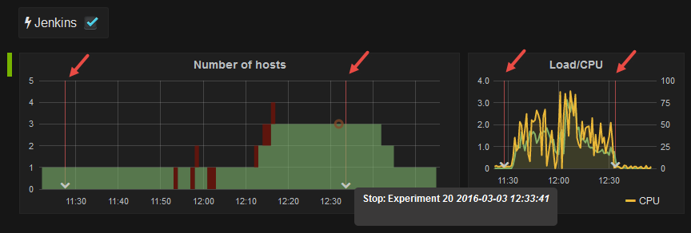
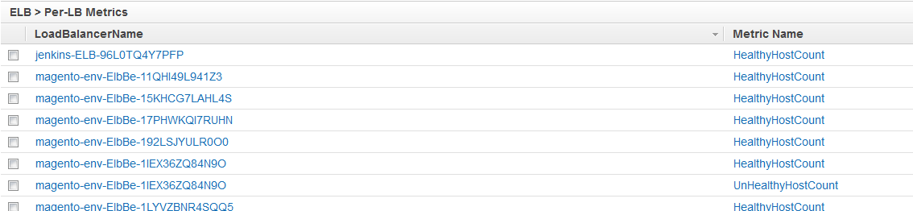

Continuous Load Testing and Monitoring
Why?
This looks like a lot of stuff, so why are we doing all this? The key motivation is to bring metrics together from various sources and look at them side by side so we can correlate the data and understand cause and effect. The various data sources of interest are:
- Infrastructure metrics (CPU, Network IO,...)
- Business metrics (Sign ups, logins, placed orders,...)
- Events (deployments, auto-scaling activity,...)
- Test metrics (response times, error rates,...)
This setup can be used
- as a monitoring solution on your production system for your real traffic,
- while running manual "experiments" tweaking various parts of your infrastructure trying to optimize your setup, and
- for continuous load testing as part of your continuous integration setup in order to detect if a new build introduces new problems compared to previous ones.
Process (How?)
In case this is not your production monitoring setup, but you're planning on detecting bottlenecks via artificially generated traffic make sure you restore a well-defined state (that ideally matches your production environment as closely as possible - not only infrastructure-wise but also include all your data). The process of running a stress test "experiment" should include a fully automated setup of your test environment. After your test is done the environment can be shut down again. If you have everything automated up to the point where no manual interaction is required that should be an easy thing to do:
AWS Metrics ➞ CloudWatch
This is the simplest part: AWS is already collecting a lot of interesting metrics for the various services. Here are some of the namespaces and metrics we typically look at:
- AWS/EC2: CPUUtilization, NetworkIn
- AWS/ELB: HealthyHostCount, UnHealthyHostCount, RequestCount, HTTPCodeBackend*
- AWS/ElastiCache: CacheMisses, CacheHits, CPUUtilization, CurrItems, CurrConnections
- AWS/RDS: DatabaseConnections, CPUUtilization, SwapUsage, {Write|Read}{IOPS|Latency|Throughput}
Additional custom EC2 Metrics ➞ CloudWatch
But there's a number of important metrics that AWS does not provide. aws-mon.sh is a simple bash script designed to be called via cron that collects some more metrics and pushes them to CloudWatch as custom metrics (using the System/Detail/Linux namespace by default):
- load average
- interrupt
- context switch
- cpu (user/system/idle/wait/steal)
- memory
- swap
- disk
I recommend using the development branch of ikeisuke's fork since it allows passing custom "group dimensions" allowing you to aggregate metrics on an auto-scaling group level the same way CloudWatch does with the default EC2 metrics. Also it will batch-submit all metrics instead of submitting all metrics individually to CloudWatch.
INSTANCE_ID=$(ec2metadata --instance-id)
EC2_AZ=$(ec2metadata --availability-zone)
EC2_REGION=${EC2_AZ/%?/}
ASG_NAME=$(aws --output text --region "${EC2_REGION}" ec2 describe-tags --filters "Name=resource-id,Values=${INSTANCE_ID}" "Name=key,Values=aws:autoscaling:groupName" --query "Tags[0].Value")
line="* * * * * root /bin/bash ${BASEPATH}/lib/monitoring/aws-mon.sh --all-items --bulk-post --grouping-dimension AutoScalingGroupName=${ASG_NAME}"
echo "$line" >> /etc/crontabApp metrics ➞ CloudWatch
Besides infrastructure metrics there's also a lot of things going on in your application that you might want to correlate to traffic, performance and other events. In case of an online store interesting metrics include:
- logins, signups
- placing items into your cart
- submitting orders
- average number of items in cart
- average cart value
- ...
For Magento I've kickstarted a Aoe_Metrics module that will provide a simple skeleton making it easy to aggregate custom metrics in an event observer and let Aoe_Metrics take care of submitting them to CloudWatch. (Example: OrderStateCount)
Logs ➞ CloudWatch Logs ➞ CloudWatch Metrics
Another trivial part (since this is a mechanism AWS provides) is streaming logs files to CloudWatch. You need to install and configure the CloudWatch Logs Agent that will take care of pushing all your log entries to CloudWatch logs in near real-time.
From there you can define "filters" to extract metric information from your log files (e.g. number of 4XX status codes in Apache log files) or you could stream your log files to ElasticSearch Service using AWS Lambda and use that as a backend for a more powerful log file analysis tool.
Jenkins (Annotations) ➞ ElasticSearch
Grafana allows adding "annotations" to your graphs. These annotations show up as vertical red lines in all your graphs allowing you to add more information about events that happen.
We submit information about deployments, stress tests start and stops,... via curl:
curl -XPOST "http://elasticsearch.example:9200/annotations/jenkins" \
-d "{ \"message\" : \"Deployment: magento-env-int-build${BUILD}\", \"timestamp\": \"$(date -u +'%Y-%m-%dT%H:%M:%SZ')\"}"
JMeter ➞ ElasticSearch
So, now this is the interesting part: Hopefully you'll need more than a single load generator instance to produce the traffic to bring your instructure down :) You could run a master JMeter instance with multiple slave instance. In this case the master instance coordinates the test execution and aggregates all the test results.
But in addition to this being unnecessary complex to setup I don't see any reason why the load generators need to know about each other. So we run multiple individual JMeter testcases in parallel. Each of them as a stand-alone test-run. On the downside you'll have to do some trivial math and multiply the number of instances with the number of threads yourself to get to the total number of threads.
Using CloudFormation wait-conditions every server signals when it's done provisioning, downloaded the testcase from S3 and ready to start the test. Then it waits for the wait-condition to become true before it starts. This way we can synchronize the test execution across all instances independently from how long it took to provision them without coupling them:
wait_for_cloudformation_resource_status.sh
#!/usr/bin/env bash
# Usage:
# timout <secondsBeforeItTimesOut> ./wait_for_cloudformation_resource_status.sh <region> <stackName> <logicalResourceId> [<expectedStatus>] [<sleepBetweenPolls>]
REGION=$1
STACK_NAME=$2
LOGICAL_RESOURCE_ID=$3
EXPECTED_STATUS=${4:-"CREATE_COMPLETE"}
SLEEP_BETWEEN_POLLS=${5:-5}
if [ -z "${REGION}" ] ; then echo "Region missing"; exit 1; fi
if [ -z "${STACK_NAME}" ] ; then echo "Stack name missing"; exit 1; fi
if [ -z "${LOGICAL_RESOURCE_ID}" ] ; then echo "Logical resource id missing"; exit 1; fi
while true; do
CURRENT_STATUS=$(aws --output=text --region "${REGION}" cloudformation describe-stack-resource --stack-name ${STACK_NAME} --logical-resource-id ${LOGICAL_RESOURCE_ID} --query "StackResourceDetail.ResourceStatus");
echo "${CURRENT_STATUS}/${EXPECTED_STATUS}"
if [ "${CURRENT_STATUS}" = "${EXPECTED_STATUS}" ] ; then
break
fi
sleep "${SLEEP_BETWEEN_POLLS}"
doneSynchronization:
# Provision instance
# ...
# Signal ready for testing
/usr/local/bin/cfn-signal --exit-code $? "${READY_FOR_TESTING_WAIT_CONDITION_HANDLE}"
# Wait for every instance being ready
timeout 600 bash wait_for_cloudformation_resource_status.sh ${REGION} ${STACK_NAME} ReadyForTestingWaitCondition CREATE_COMPLETE 5 || error_exit 'Failed waiting for JMeter bees (timeout)'
# Run test
timeout "${TestDuration}" jmeter -n -t testcase.jmx -JBASE_URL=${BaseUrl} -JNUMBER_OF_THREADS=${ThreadsPerInstance}
# Signal Testing Completed
/usr/local/bin/cfn-signal --exit-code $? "${TESTING_COMPLETED_WAIT_CONDITION_HANDLE}"
# Shut down (and termination)
shutdown -h nowBut how do we get all the test results? We could have every instance write local files (jmeter -n -t testcase.jmx -l results.jtl -l testrun.log) and upload those files back to the S3 bucket the testcase was download from at the end of the test. But this means that we can't watch what's happening until the test is over and if something goes wrong we loose these results. In addition to that we'll have to manually merge the results from all instance.
Instead we want those results to be streamed to ElasticSearch in (near) real-time. This way we don't have to worry about the instance and can simply kill the process (e.g. with timeout) or shut down the instances when we want to interrupt the test run. Load generators truly become ephemeral "cattle" this way.
Using a custom backend listener you can collect the test results during the test run and process them in batches.
We started with the ElasticSearchBackendListenerClient custom backend listener until we found out that AWS' ElasticSearch Service currently only allows access via the REST API (and not via the Java API on Port 9300 this backend listener was using). So we created our own 'ElasticSearchRestClientBackendListener' that uses the regular REST API (will be published soon). (Later we found out that we wanted to run Kibana 4.3 that requires ElasticSearch 2.1, which isn't what ElasticSearch Service is currently running, so we provisioned our own ElasticSearch server with Kibana, where we could have used the ElasticSearchBackendListenerClient that we found in the begninning. A couple more days later we found out we like Grafana a lot more than Kibana - at least for the dashboards and graphs. Grafana works well with ElasticSearch 1.x and 2.x, so we're ready to switch back to ElasticSearch Service now, where we don't have another option than using the REST API and we'll need to use our RestClient listener, but we'll not have to deal with running a ElasticSearch cluster ourselves).
CloudWatch ➞ AWS Lambda ➞ ElasticSearch
Finding the right resources in CloudWatch is a challenge:

And this is even more difficult if you constantly launch new resources (load balancers, auto-scaling groups, EC2 instances,...) in an immutable setup. Sadly CloudWatch doesn't allow you select metrics by a resources' tags. What we're trying to do is to monitor a moving target here. New resources will come and go with every deployment. Building a CloudWatch dashboard doesn't work and even with dynamic ElasticSearch queries and Kibana you won't be able to select the relevant resources based on tags since this information is not present in CloudWatch.
This is where AWS Lambda comes in handy. With a scheduled function (every 5 minutes) we can discover the resources for a given environment that are currently in use, by tag and/or naming conventions. Then we collect theses resources' metrics using the dimensions CloudWatch is expecting (e.g. AutoScalingGroupName,...) and push them to ElasticSearch in a single batch. This way we have a continuous stream of metrics that will dynamically gather data from the relevant resources.
Here's a simplified(!) version of the Lambda function. (Find the full version here). Also, don't forget to define a role for Lambda that has access to all this information (you could use the arn:aws:iam::aws:policy/ReadOnlyAccess policy if you're lazy).
var AWS = require('aws-sdk');
var cloudwatch = new AWS.CloudWatch({ region: 'us-east-1'});
exports.handler = function (event, context) {
var ElasticSearchHost = 'elasticsearch.example:9200';
var Environment = 'int';
var EndTime = new Date;
var StartTime = new Date(EndTime - 15*60*1000);
var bulkData = {body:[]};
var findAutoScalingGroup = function(callback) {
var autoscaling = new AWS.AutoScaling({ region: 'us-east-1'});
autoscaling.describeAutoScalingGroups({}, function(err, data) {
if (err) {
callback(err, data);
} else {
var found = 0;
// find autoscaling group by tag
data.AutoScalingGroups.forEach(function (item) {
var assocTags = convertToAssocTags(item.Tags);
if (assocTags.Environment == Environment) {
found++;
callback(null, item.AutoScalingGroupName);
}
});
if (!found) {
callback('No autoscaling group found', null);
}
}
})
};
var sendToElasticSearch = function(bulkData) {
if (bulkData.body.length > 0) {
console.log('Sending ' + (bulkData.body.length/2) + ' metrics to ElasticSearch:');
var elasticsearch = require('elasticsearch');
var elasticSearchClient = new elasticsearch.Client({ host: ElasticSearchHost });
elasticSearchClient.bulk(bulkData, function(err, data) {
if (err) {
errorExit(err, context);
} else {
context.succeed();
}
});
} else {
context.done();
}
};
var getMetricStatistics = function(Namespace, metric, dimensions) {
metric.MetricNames.forEach(function (MetricName) {
var params = {
Period: 60,
StartTime: StartTime,
EndTime: EndTime,
MetricName: MetricName,
Namespace: Namespace,
Statistics: ['SampleCount', 'Average', 'Sum', 'Minimum', 'Maximum'],
Dimensions: dimensions
};
console.log('Fetching ' + Namespace + ':' + MetricName + ' for ' + dimensions[0].Value);
cloudwatch.getMetricStatistics(params, function (err, data) {
if (err) {
console.log(err, err.stack);
} else {
data.Datapoints.forEach(function (datapoint) {
datapoint.Namespace = Namespace;
datapoint.MetricName = MetricName;
datapoint.Dimension = dimensions[0];
datapoint.Environment = Environment;
// push instruction
bulkData.body.push({index: {
_index: 'cloudwatch',
_type: Namespace + ':' + MetricName,
_id: Math.floor(datapoint.Timestamp.getTime() / 1000)
}});
// push data
bulkData.body.push(datapoint);
});
sendToElasticSearch(bulkData);
}
});
});
};
var convertToAssocTags = function (tags) {
var assocTags = {};
tags.forEach(function(tag) {
assocTags[tag.Key] = tag.Value;
});
return assocTags;
};
findAutoScalingGroup(function(err, AutoScalingGroupName) {
if (err) {
console.log(err, err.stack);
} else {
getMetricStatistics('AWS/EC2', 'CPUUtilization', [{Name: 'AutoScalingGroupName', Value: AutoScalingGroupName}]);
}
});
};Grafana
While Kibana is a great tool I started falling in love with Grafana lately. I find it much more flexible and easier to setup. On top of that the graphs look prettier too:
Sadly Grafana doesn't come with a nice interface to browse the data and write ElasticSearch queries. That's why we keep Kibana around as "query editor" and "data browser" and then configure the graphs in Grafana.
Grafana is not specific to ElasticSearch. In fact it was build for Graphite initially. You could even directly access CloudWatch as a data source (without the Lambda function pushing the metrics to ElasticSearch), but if your infrastructure is "too dynamic" (immutable) you'll probably have a hard time selecting the relevant resources.
Continuous Integration with Jenkins and CloudFormation
Everything starts with a build job in Jenkins. The artifact (a '.tar.gz' file or two) will be uploaded to an S3 bucket. From there we start a series of different tests. For the "static code analysis" we don't need a working environment. But after that we need one (in Magento even "Unit Tests" require a working Magento environment in most cases, which to some degree blurs the lines between unit and integration tests...).
The deployment happens in a separate downstream Jenkins job. Our deployment strategy is completely driven by CloudFormation. Similar to using CloudFormation for the "process" of running a stress test as described earlier in this article, we're using CloudFormation not only to spin up all the required resources for this specific build, but we trigger Lambda backed custom resources to update Route53 record sets and delete old stacks. The entire deployment process is reflected in a stack deployment specific to the current build.
In order to make it more convenient to manage CloudFormation templates including parameters, embedded (userdata) scripts and connect them with other stacks we created a the StackFormation tool. If you want to learn more about the deployment process specifically (and you're happen to be in the Bay Area) you should stop by my presentation at the AdvancedAWS meetup in March (and/or a blog post on this might follow at some point...).
Once the environment is up and running we can continue with our tests. The next step would be a series of infrastructure test (check out AwsInspector), where we test everything infrastructure related by querying the AWS API, via (multiplexed) SSH connections, and via HTTP.
Finally we launch the stress tests as described above in another Jenkins job. Again the long-running CloudFormation deployment is driving the stress test and StackFormation will even listen to you aborting the Jenkins Job (SIGTERM), will stop the stress test and destroy the test infrastructure if you want it to.


{kind=link}
{kind=link}
{kind=link}
This website uses disqus for the commenting functionality. In order to protect your privacy comments are disabled by default.
Enable Comments